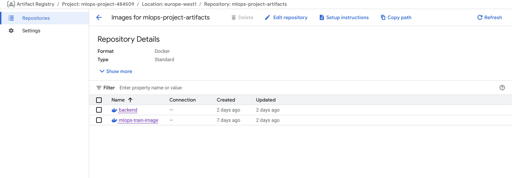
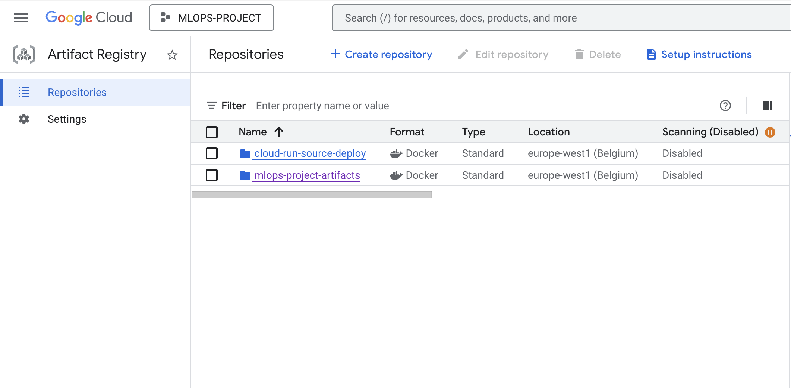
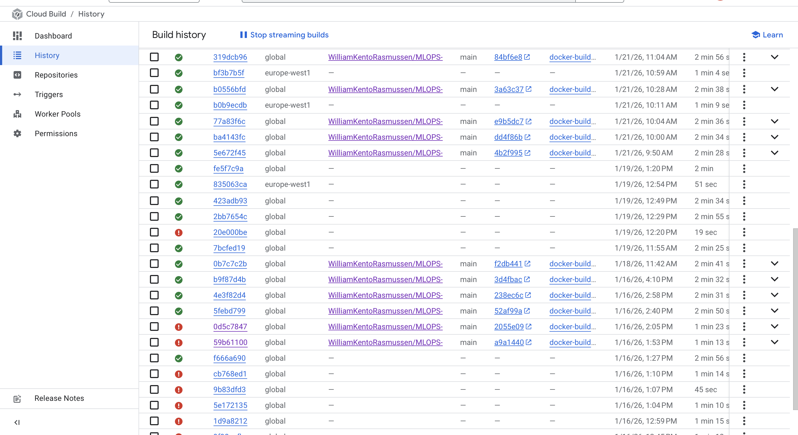
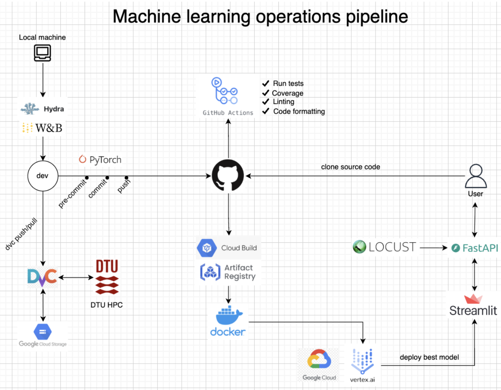

{kind=link}


Operations
This is the report template for the exam. Please only remove the text formatted as with three dashes in front and behind like:
--- question 1 fill here ---
Where you instead should add your answers. Any other changes may have unwanted consequences when your report is
auto-generated at the end of the course. For questions where you are asked to include images, start by adding the image
to the figures subfolder (please only use .png, .jpg or .jpeg) and then add the following code in your answer:

In addition to this markdown file, we also provide the report.py script that provides two utility functions:
Running:
bash
python report.py html
Will generate a .html page of your report. After the deadline for answering this template, we will auto-scrape
everything in this reports folder and then use this utility to generate a .html page that will be your serve
as your final hand-in.
Running
bash
python report.py check
Will check your answers in this template against the constraints listed for each question e.g. is your answer too short, too long, or have you included an image when asked. For both functions to work you mustn't rename anything. The script has two dependencies that can be installed with
bash
pip install typer markdown
or
bash
uv add typer markdown
The checklist is exhaustive which means that it includes everything that you could do on the project included in the curriculum in this course. Therefore, we do not expect at all that you have checked all boxes at the end of the project. The parenthesis at the end indicates what module the bullet point is related to. Please be honest in your answers, we will check the repositories and the code to verify your answers.
data.py file such that it downloads whatever data you need and preprocesses it (if necessary) (M6)model.py and a training procedure to train.py and get that running (M6)requirements.txt/requirements_dev.txt files or keeping your
pyproject.toml/uv.lock up-to-date with whatever dependencies that you are using (M2+M6)pep8) while doing the project (M7)Enter the group number you signed up on
Answer:
4
Enter the study number for each member in the group
Example:
sXXXXXX, sXXXXXX, sXXXXXX
Answer:
s244705, s245310, s244794, s252362
Did you end up using any open-source frameworks/packages not covered in the course during your project? If so which did you use and how did they help you complete the project?
Recommended answer length: 0-200 words.
Example: We used the third-party framework ... in our project. We used functionality ... and functionality ... from the package to do ... and ... in our project.
Answer:
We did not use any open-soruce frameworks or packages that were not covered in the course for our project.
In the following section we are interested in learning more about you local development environment. This includes how you managed dependencies, the structure of your code and how you managed code quality.
Explain how you managed dependencies in your project? Explain the process a new team member would have to go through to get an exact copy of your environment.
Recommended answer length: 100-200 words
Example: We used ... for managing our dependencies. The list of dependencies was auto-generated using ... . To get a complete copy of our development environment, one would have to run the following commands
Answer:
We used UV for managing our dependencies, because of its increasing relevance in the field. All dependencies are declared in the pyproject.toml file, while exact versions are pinned in a lockfile generated by uv. This lockfile ensures reproducibility across machines and development stages.
To obtain a complete copy of our development environment, a new team member would first install uv and ensure a compatible version of python. After cloning the repository, they would run 'uv sync', which automatically creates a virtual environment and installs all dependencies exactly as specified in the lockfile.
We expect that you initialized your project using the cookiecutter template. Explain the overall structure of your code. What did you fill out? Did you deviate from the template in some way?
Recommended answer length: 100-200 words
Example: From the cookiecutter template we have filled out the ... , ... and ... folder. We have removed the ... folder because we did not use any ... in our project. We have added an ... folder that contains ... for running our experiments.
Answer:
We initialized our project using the course-provided Cookiecutter MLOps template, which served as structured starting point for organizing our codebase. From the template, we primarily filled out source directory ('src'), chich containts the core implementation of our project. This folder represents the main workflow of our machine learning pipeline.
The data directory does store contain raw datasets directly in the repository. Instead, raw data is sourced programmatically from kaggle and tracked using DVC. The .dvc directory contains metadata files that refrence versioned data stored externally.
To improve configuration and reproducability, we added a config directory for managing model and pipeline parameters, as well as .devcontainer directory. We also removed the notebooks directory, as our workflow relied on script-based development rather than interactive notebooks.
Did you implement any rules for code quality and format? What about typing and documentation? Additionally, explain with your own words why these concepts matters in larger projects.
Recommended answer length: 100-200 words.
Example: We used ... for linting and ... for formatting. We also used ... for typing and ... for documentation. These concepts are important in larger projects because ... . For example, typing ...
Answer:
Our code is formatted after the official Python style guide, Pep8. We added 'Ruff' as a development dependency to enforce consistent code formating, structure, and linting, healping us maintain clean and readable code. In addition, we sometimes used type hints to improve code reliability and make function inputs and outputs easier to understand. We also included documentaiton and comments where to appropriately clarify the purpose of components.
While good coding practices may seem less important in solo projects, they become essential when dealing with larger projects with multiple contributers. Consistent formatting makes the codebase easier to read, typing helps prevent bugs and misunderstandings, and documentation ensures other developers can quickly understand and expand the project.
In the following section we are interested in how version control was used in your project during development to corporate and increase the quality of your code.
How many tests did you implement and what are they testing in your code?
Recommended answer length: 50-100 words.
Example: In total we have implemented X tests. Primarily we are testing ... and ... as these the most critical parts of our application but also ... .
Answer:
In total we have implemented 5 tests, unit tests namely data and model testing as well as integration and performance tests for the backend and frontend of our API. During the data and model tests we ensure the data is properly split, is in the right shape, the distinct models are accurately trained and appear in a structure which is reasonable, further whether our output has the desired shape. For our API we test how its performance is effected under several users by locust, and whether in the backend the model directories can be found as well as prediction is accuractely done, and in the frontend simply whether there is proper connection with the backend.
What is the total code coverage (in percentage) of your code? If your code had a code coverage of 100% (or close to), would you still trust it to be error free? Explain you reasoning.
Recommended answer length: 100-200 words.
Example: The total code coverage of code is X%, which includes all our source code. We are far from 100% coverage of our ** code and even if we were then...*
Answer:
We get a total code coverage of 28% which is not necessarily high, but this also is grounded in the fact that we were unable to remove cloud_train and old_cloud_train files from also being in the coverage despite the absence of any tests for these two files, which brings the overall coverage significantly down. Even if we had 100% coverage, it doesnt mean the code is error free as coverage merely looks at the amount of code that is tested, but doesnt give any indication in regards to whether these tests work accurately, as well as not including edge cases, such as empty inputs and the competency of several files together for the most part, while we do check frontend backend competency.
Did you workflow include using branches and pull requests? If yes, explain how. If not, explain how branches and pull request can help improve version control.
Recommended answer length: 100-200 words.
Example: We made use of both branches and PRs in our project. In our group, each member had an branch that they worked on in addition to the main branch. To merge code we ...
Answer:
We made use of both branches and pull requests. Everyone would create their own branch when they were working on a new objective, named after the objective for easier tracking of the branches and their commits, and either when it was completely done or in an intermediate process of the objective, the branch would be merged into the main. This was mainly to ensure that neither of the branches were too far behing commits of the main as we faced this issue on the first day making merging were cumbersome. Therefore, there would be sent pull request to the remote repository where someone would have to confirm the merge and resolve any conflicts before committing the merge. Also this made it easy to go back and forth between commits to ensure version control, if we had to go back to a previous version. Afterwards the branch would be deleted, just to have a proper organisation of the directory.
Did you use DVC for managing data in your project? If yes, then how did it improve your project to have version control of your data. If no, explain a case where it would be beneficial to have version control of your data.
Recommended answer length: 100-200 words.
Example: We did make use of DVC in the following way: ... . In the end it helped us in ... for controlling ... part of our pipeline
Answer:
We used DVC fundamentally as the although we had raw data in our repository for the purpose of creating dockerfiles, since our data was sourced from kaggle and versioned using dvc with metadata stored in the external storage through the .dvc. By this we were able to track the data versions, making sure model training was consistent. And it would normally increase the storage relief as the large dataset we had wouldnt have to remain locally however we had to store data locally due to other problems, this also applies to the members being able to access the same data set without constantly downloading the newest version. We also didnt end up making too many variations of the data that would benefit the logging of training for different dataset, which in a real-life project would prove to be very beneficial.
Discuss you continuous integration setup. What kind of continuous integration are you running (unittesting, linting, etc.)? Do you test multiple operating systems, Python version etc. Do you make use of caching? Feel free to insert a link to one of your GitHub actions workflow.
Recommended answer length: 200-300 words.
Example: We have organized our continuous integration into 3 separate files: one for doing ..., one for running ... testing and one for running ... . In particular for our ..., we used ... .An example of a triggered workflow can be seen here:
Answer:
We have organized our continous integration into 8 separate files, pre-commit, codecheck, coverage-test,data-change,linting,model-registry, and also we included dependabot. These workflows would be activated in every pull and push request: Pre-commit: Ruff to get the code quality and format to a certain standard, while ignoring certain of the data directories locally Code-check: Does a similar job to pre-commit such as formatting the code to a certain standard however manages this between pull requests, safety net for if pre-commit is skipped Data-change: Executed if there is change in the data quality or situation hence updates the models if there is any change purely in the data/ folder Model-change: Similarly is only executed when there is changes to the model structures, handles the deployment of the new model. Linting: Executes the code standard and ruff and formatting similar to code-check between pull and push requests however is extended to work in development branches while code-check is mainly between main and master Coverage Test: Executes the coverage report of the tests on the following files we have, reporting it. Dependabot: Runs dependency checks automatically and updates them For all of the workflows we either use python 3.12 or 3.11 for the best competency, we run on ubuntu-latest however we dont test several operating systems. We use action cacheing that reduces our runtime. Here is a github action that includes coverage test: https://github.com/WilliamKentoRasmussen/MLOPS-PROJECT/actions/runs/21244110734
In the following section we are interested in learning more about the experimental setup for running your code and especially the reproducibility of your experiments.
How did you configure experiments? Did you make use of config files? Explain with coding examples of how you would run a experiment.
Recommended answer length: 50-100 words.
Example: We used a simple argparser, that worked in the following way: Python my_script.py --lr 1e-3 --batch_size 25
Answer:
We configured training experiments using Hydra configuration files to separate model, training, and system settings. The config directory contains subfolders for model (e.g. Baseline, Alexnet, VGG16) and training (e.g., default and quick runs), each defining parameters such as architecture, learning rate, batch size, and epochs. A central config.yaml composes these components and specifies data paths, device selection, and output directories. Experiments are executed by selecting configurations at runtime, for example:
bash
python src/main_project/train.py model=baseline training=default
Hydra also allows for hyperparameters to be overridden from the command line, for example:
bash
python src/main_project/train.py training.epochs=20 training.lr=1e-4
Reproducibility of experiments are important. Related to the last question, how did you secure that no information is lost when running experiments and that your experiments are reproducible?
Recommended answer length: 100-200 words.
Example: We made use of config files. Whenever an experiment is run the following happens: ... . To reproduce an experiment one would have to do ...
Answer:
We ensured experiment reproducibility by combining configuration management, data versioning, and environment control. All experiments are configured using Hydra configuration files, which separate model, training, and system parameters. Whenever an experiment is run, Hydra automatically saves the fully resolved configuration for that run, ensuring that no parameter choices are lost and that each experiment can be tracked back to its exact settings.
Data reproducibility is handled using DVC. Rather than storing raw data in the repository we track data version through DVC metadata files, allowing experiment to be rerun with the same data version even as datasets evolve. Dependency reproducibility is ensured using uv, Where all python dependencies are declared and pinned in a lockfile committed to version control.
To reproduce and experiment, one would restore the correct data using DVC, synchronize dependencies using uv, and rerun the training script with the same hydroconfiguration. Additionally, a devcontainer/Docker setup ensures a consistent development environment across machines, further reducing sources of variability.
Upload 1 to 3 screenshots that show the experiments that you have done in W&B (or another experiment tracking service of your choice). This may include loss graphs, logged images, hyperparameter sweeps etc. You can take inspiration from this figure. Explain what metrics you are tracking and why they are important.
Recommended answer length: 200-300 words + 1 to 3 screenshots.
Example: As seen in the first image when have tracked ... and ... which both inform us about ... in our experiments. As seen in the second image we are also tracking ... and ...
Answer:
We used Weights & Biases (W&B) to track and compare our machine learning experiments across different model architectures and training configurations. Each run corresponds to a specific model type allowing us to systematically evaluate perfromance differences.
As seen in the images above, we have tracked epochs, best validation accuracy, training loss, training accuracy, validation loss, and validation accuracy. Training metrics inform us about how well the model fits the training data, while validation metrics are critical for detecting overfitting and assessing generalization performance. In particular, validation accuracy serves as our primary model selection criterion, as it reflects perfromance on unseen data. we also logged best validaiton accuracy to esily compare the peak perfromance of the best runs. Additionally, we tracked epoch count to align metric across runs and ensure fair compairson when early stopping was triggered
Furthermore, System metrics were also tracked. These metrics are important from an MLOps perspective, as they provide insight into hardware efficiency, resource consumption, and potential bottlenecks during training.
By visualizing all metrics in W&B, we were able to compare models such as the baseline, AlexNet, and VGG16 side by side. THis enabled systematic comparison of model behavior and performance across experiments. It should be noted that the reported results do not reflect fully optimized hyperparameters, as the priority focus of this work was on implementing a reproducible and well-intrumented MLOps pipeline rather than maximizing model performance.
Docker is an important tool for creating containerized applications. Explain how you used docker in your experiments/project? Include how you would run your docker images and include a link to one of your docker files.
Recommended answer length: 100-200 words.
Example: For our project we developed several images: one for training, inference and deployment. For example to run the training docker image:
docker run trainer:latest lr=1e-3 batch_size=64. Link to docker file:Answer:
We developed four docker images to containerize different components of our classification project: training, backend, frontend and cloud training. Docker was used for reproducibility and consistent environments across development, testing, and deployment. All of our dockerfiles use uv package manager. Our training dockerfile accepts hydra configuration overrides as runtime arguments. For example, running the training docker image: docker run trainer:latest model=baseline training.lr=1e-3 training.batch_size=64 training.epochs=20. The backend dockerfile can be run with port mapping: docker run -p 8000:8000 backend:latest Link:https://github.com/WilliamKentoRasmussen/MLOPS-PROJECT/blob/main/dockerfiles/train.dockerfile
When running into bugs while trying to run your experiments, how did you perform debugging? Additionally, did you try to profile your code or do you think it is already perfect?
Recommended answer length: 100-200 words.
Example: Debugging method was dependent on group member. Some just used ... and others used ... . We did a single profiling run of our main code at some point that showed ...
Answer:
Debugging method was dependent on group member. In general, when encountering bugs during experiment execution, We first attempted to identify the source of the problem by inserting print statements and inspecting intermediate outputs. For more complex or unclear errors, we made use of AI-assisted tools such as GitHub Copilot to help interpret error messages and suggest potential fixes. This iterative approach allowed us to quickly diagnose configuration issues.
In addition to debugging, we performed basic profiling of the training loop using Pytorch's built-in torch.profiler. The profiler was used to measure CPU execution time during training, helping us identify potential performance bottlenecks in the data loading and forward/backward passes. Profiling results were exported and visualized using 'ui.perfetto.dev'. While the code is not assumed to be fully optimized, this profiling step provided insight into runtime behavior and profiling implementations.
In the following section we would like to know more about your experience when developing in the cloud.
List all the GCP services that you made use of in your project and shortly explain what each service does?
Recommended answer length: 50-200 words.
Example: We used the following two services: Engine and Bucket. Engine is used for... and Bucket is used for...
Answer:
We used the following service: Artifacts, Cloud Build, Cloud Run, and Vertex AI. Artifacts is used for storing our docker images. We implemented an automatic trigger in cloud build to automaticly build images in the cloud and upload them to artifacts. Moreover, we used the Bucket service to store our trained pytorch models as well as the processed pneumonia Data consisting of jpeg images. The cloud run was used to run our backend for our api and Vertex ai was used to train our images.
The backbone of GCP is the Compute engine. Explained how you made use of this service and what type of VMs you used?
Recommended answer length: 100-200 words.
Example: We used the compute engine to run our ... . We used instances with the following hardware: ... and we started the using a custom container: ...
Answer:
We used the Compute Engine indirectly through Vertex AI Custom Jobs to run our model training in the cloud. The vertex ai takes use of a virtual instance with the machine type n1-highmem-2, which provides 2 vCPUs and 13 GB of RAM, making it suitable for memory-intensive data loading and preprocessing tasks. Although we initially planned to use GPUs for faster training, our GPU quota request was not approved, so all experiments were run on CPU-based instances.
Our training jobs were executed using a custom Docker container, which packaged our full training environment, including source code, dependencies, and configuration files. This ensured that every training run was fully reproducible and isolated from the local development setup. Sensitive credentials such as API keys were not hardcoded into the container; instead, they were securely injected at runtime using Google Cloud Secret Manager and environment variables. This design follows best practices for cloud security and allows us to update secrets without rebuilding images, while Compute Engine handled the scalable and reliable execution of the training workloads.
Insert 1-2 images of your GCP bucket, such that we can see what data you have stored in it. You can take inspiration from this figure.
Answer:


Upload 1-2 images of your GCP artifact registry, such that we can see the different docker images that you have stored. You can take inspiration from this figure.
Answer:  
Upload 1-2 images of your GCP cloud build history, so we can see the history of the images that have been build in your project. You can take inspiration from this figure.
Answer:

Did you manage to train your model in the cloud using either the Engine or Vertex AI? If yes, explain how you did it. If not, describe why.
Recommended answer length: 100-200 words.
Example: We managed to train our model in the cloud using the Engine. We did this by ... . The reason we choose the Engine was because ...
Answer:
We tried to train our model in the cloud using Vertex AI. Unfortunately, we did not succeed. We chose the Vertex AI service to simplify the training setup on a virtual machine, since it could potentially allow us to configure different learning parameters and store the trained weights in a Cloud Storage bucket. We overcame several problems along the way, mostly concerning permissions, Dockerfiles (copying our data), and building the Docker image for the correct platform (we initially built for macOS, which apparently can not be run in the cloud). In the end, we ran into a memory issue. We configured Vertex AI to download the data from the bucket, which worked sometimes, but other times the job ran out of memory. We tried upgrading our virtual machine to an n1-highmem-8 instance, but this did not solve the issue. We assume that there might be some other issues in how it stores some of the data. We might have been able to resolve this given more time, but we decided to focus on other parts of the curriculum. We really tried though :)
Did you manage to write an API for your model? If yes, explain how you did it and if you did anything special. If not, explain how you would do it.
Recommended answer length: 100-200 words.
Example: We did manage to write an API for our model. We used FastAPI to do this. We did this by ... . We also added ... to the API to make it more ...
Answer:
We have implemented an API, which can be seen as a backend file, we used fastapi to build the backend application. Our application has endpoints which checks the functionality of the application, such as health and whether the model directories can be found, applied to all the three different models we have baseline, alexnet and vgg16. However, the main inference of the API is classification of given chest-xrays which predict whether pnemonuia is apparent or not with a probability and a confidence. Furthermore, the inference can be made so that the input takes a batch of images, hence technically the API can handle a whole dataset fed into it and makes a series of predictions, however we didn't try whether this batch inference can infact handle all sizes of datasets.
Did you manage to deploy your API, either in locally or cloud? If not, describe why. If yes, describe how and preferably how you invoke your deployed service?
Recommended answer length: 100-200 words.
Example: For deployment we wrapped our model into application using ... . We first tried locally serving the model, which worked. Afterwards we deployed it in the cloud, using ... . To invoke the service an user would call
curl -X POST -F "file=@file.json"<weburl>Answer:
We managed to deploy our model both in the cloud and locally. For both deployment, we wrapped our model in a FastAPI framework. We deployed it in the cloud using the Cloud Run Service. To invoke the service an user would call "curl -X POST -F "file=@file.json"https://mlops-prediction-function-1031863562600.europe-west1.run.app/predict. It can also be ran using the docs with this url https://mlops-prediction-function-1031863562600.europe-west1.run.app/docs.
Did you perform any unit testing and load testing of your API? If yes, explain how you did it and what results for the load testing did you get. If not, explain how you would do it.
Recommended answer length: 100-200 words.
Example: For unit testing we used ... and for load testing we used ... . The results of the load testing showed that ... before the service crashed.
Answer:
We both used unit and load testing for the API. We implemented unit tests for the backend for the point of testing if the endpoints worked accordingly, such as inference of single images as well as whether the model directories were found or not. For the frontend we simply, tested for the backend url properly connecting. We also implemented a load test by locust, where the priority of the tasks was given mainly to single image prediction, we didnt play with load testing too much however the system didn't crash for 10 users, and users per second at 1.
Did you manage to implement monitoring of your deployed model? If yes, explain how it works. If not, explain how monitoring would help the longevity of your application.
Recommended answer length: 100-200 words.
Example: We did not manage to implement monitoring. We would like to have monitoring implemented such that over time we could measure ... and ... that would inform us about this ... behaviour of our application.
Answer:
Monitoring is an important aspect of the machine learning pipeline, as it helps ensure the longevity and reliability of deployed applications. In particular, data drift monitoring helps detect when incoming data diverges from the training data, which can lead to degraded model performance. Detecting drift early allows teams to trigger model training or further investigation before accuracy drops significantly.
We implemented limited monitoring in the form of alert systems that sends out an email if the amount of API calls exceeds a certain threshold. We would have liked to have implemented monitoring such that we could measure different looks regarding the performance of our api and data drifting in a cloud-based environment.
In the following section we would like you to think about the general structure of your project.
How many credits did you end up using during the project and what service was most expensive? In general what do you think about working in the cloud?
Recommended answer length: 100-200 words.
Example: Group member 1 used ..., Group member 2 used ..., in total ... credits was spend during development. The service costing the most was ... due to ... . Working in the cloud was ...
Answer:
During the whole project, we ended up spending a total of 36.41 kr on the google Cloud Platform. We used the same account for all implementation in the cloud, so we are unable to determine how much each group member used in credits. The total cost was spread out on the following services.
Cloud run: 0.05 kr VM Manager: 0.21 kr Networking: 0.40 kr Cloud Build: 0.02 kr Container Registry Vulnerability and Scanning: 13.18 kr Cloud Storage: 0.18 kr Artifacts Registry: 0.34 kr Vertex AI: 1.88 kr Compute Engine: 20.16 kr
The most expensive service was Compute Engine, due to its relatively high monthly rate and its use in training our model (as well as us forgetting to shut down multiple instances when they were inactive). I was surprised by how cheap Cloud Run was, even though it allowed us to run our backend. I found it quite hard to work in the cloud, but also really insightful. I learned a lot of things that I had previously been confused about in at my student work. Moreover, as I solved more and more issues, I felt that I began to understand the “cloud mindset” much better. If I could do it again, I would make sure to implement all the steps in order, and I would try to use the official troubleshooting section instead of immediately turning to ChatGPT, since that led me into a loop of pasting in suggested solutions and then pasting the resulting errors back into ChatGPT when they didn’t work. Which was a headache.
Did you implement anything extra in your project that is not covered by other questions? Maybe you implemented a frontend for your API, use extra version control features, a drift detection service, a kubernetes cluster etc. If yes, explain what you did and why.
Recommended answer length: 0-200 words.
Example: We implemented a frontend for our API. We did this because we wanted to show the user ... . The frontend was implemented using ...
Answer:
Yes we implemented a frontend for our API, we did this because we wanted to imporve the the user interaction with the interface, also allowing for the division of the app hence only needing to scale backend technically isnt of course super applicable to the project . The frontend was able to receive the url from the backend, and display the inference. Frontend was implemented using streamlit and was also containerized by docker for deployment however we were unable to actually deploy this part to the cloud.
Include a figure that describes the overall architecture of your system and what services that you make use of. You can take inspiration from this figure. Additionally, in your own words, explain the overall steps in figure.
Recommended answer length: 200-400 words
Example:
The starting point of the diagram is our local setup, where we integrated ... and ... and ... into our code. Whenever we commit code and push to GitHub, it auto triggers ... and ... . From there the diagram shows ...
Answer:

The starting point of our diagram is our local development setup, where we integrated Hydra for managing configurations, Weights & Biases for tracking experiments, and PyTorch for building our models.
Our workflow splits into two paths. For code, whenever we commit and push to GitHub, it automatically triggers GitHub Actions that run tests, check coverage, and do linting. When we merge to main, Google Cloud Build kicks in, builds a Docker container from our code, and pushes it to Artifact Registry.
For data management, we use DVC to handle our chest X-ray dataset. DVC syncs with two storage backends: DTU HPC via SSH and Google Cloud Storage. This keeps our large data files out of GitHub while still maintaining version control.
From there, we use Vertex AI on Google Cloud Platform to train our models. It pulls our Docker image from Artifact Registry and runs training on cloud infrastructure. All metrics get logged to Weights & Biases, and we save the best model based on validation accuracy.
Once training is done, we deploy the best model using FastAPI for our REST API and Streamlit for a web interface. Users can upload chest X-ray images and get pneumonia predictions back. We also use Locust for load testing to make sure our API performs well under production load.
Discuss the overall struggles of the project. Where did you spend most time and what did you do to overcome these challenges?
Recommended answer length: 200-400 words.
Example: The biggest challenges in the project was using ... tool to do ... . The reason for this was ...
Answer:
We encountered multiple challenges that required time and effort to overcome. One of the main difficulties was working with Docker and cloud services. Building Docker images that worked consistently across local machines and Google Cloud proved challenging, especially when dealing with platform mismatches, copying data correctly into images, and handling memory constraints in cloud-based training.
Another major challenge was setting up and maintaining continuous integration workflows. We experience repeated failures related to lining and formatting checks using ruff. Additionally, managing multiple GitHub actions workflows added complexity and required careful coordination to avoid conflicts or redundant runs.
A broader struggle throughout the project was the sheer scope of the course curriculum. The course covers many MLOps concepts in a relatively short time, and trying to implement as many of them as possible sometimes felt overwhelming. This occasionally led to a messy workflow where multiple components were developed in parallel without being fully stabilized before moving on.
We overcame these challenges through debugging, group discussions, and incremental improvements. Overall, although the project was challenging, these struggles provided valuable hands-on experience with real-world MLOps complexity.
State the individual contributions of each team member. This is required information from DTU, because we need to make sure all members contributed actively to the project. Additionally, state if/how you have used generative AI tools in your project.
Recommended answer length: 50-300 words.
Example: Student sXXXXXX was in charge of developing of setting up the initial cookie cutter project and developing of the docker containers for training our applications. Student sXXXXXX was in charge of training our models in the cloud and deploying them afterwards. All members contributed to code by... We have used ChatGPT to help debug our code. Additionally, we used GitHub Copilot to help write some of our code. Answer:
The project we completed collaboratively, with responsibilities shared among all team members. Development tasks were divided by focus areas, while major decisions and changes were discussed collectively with the group.
Students s245310 and s244794 were primarily responsible for the frontend, backend, and cloud-related components, including API integration and deployment aspects. students s245310 and s252362 mainly focused on model development, data handling, data drift, profiling and logging.
Generative AI tools were also used during the development process. In particular, ChatGPT and CoPilot were used to assist with debugging, understanding error messages, and exploring implementation approaches. These tools were used as support and inspiration, while all final code, design decisions, and documentations were produced and validated by group members.
{kind=link}
{kind=link}
{kind=link}